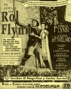
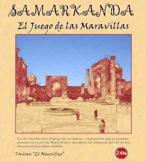

Antonio Jesús Sánchez Padial
Me interesan las artes visuales, el ocio interactivo (incluyendo los videojuegos), el medio ambiente, las humanidades digitales, los nuevos medios (incluyendo nuevas narrativas), y por tanto el periodismo digital, también la ciencia, la tecnología, y otras actividades lúdicas como los juegos de rol.
Además soy Ingeniero en informática.
Estudios superiores
Doctorado
Fase de tesis del programa de Informática Interactiva y Multimedia de la Universidad Rey Juan Carlos
Máster en Tecnologías de la Información y Sistemas Informáticos
2009. Universidad Rey Juan Carlos. Premio Jóvenes Investigadores del Consorcio Social por el proyecto fin de master.
Ingeniero en Informática
2003. Universidad de Oviedo
Formación adicional
26.000 píxeles
2010. Dirigido por Chris Sugrue en Medialab-Prado. Uso artístico de la fachada de la Plaza de las Letras.
BigGames
2012. Dirigido por el colectivo Uncoded. Introducción al uso recreativo de grandes pantallas, con prácticas sobre la fachada del Medialab.
Kinect
Dirigido por Golan Levin. Introducción a la visión por computador usando una cámara tridimensional Kinect.
Otros cursos
Visión por computador (CSIC), análisis de datos e inteligencia artificial (Universidad Rey Juan Carlos) y diversos cursos de ingeniería del software y administración de sistemas.
Experiencia laboral
Centro de Ciencias Humanas y Sociales
Desde 2008, funcionario de la Escala de Técnicos Especilizados de los Organismos Públicos de Investigación. Adscrito a la Unidad de Tecnologías de la Información y de la Comunicación
Instituto Geológico y Minero de España
2003 a 2008. Técnico I+D en la Unidad de Hidrogeología y Aguas Subterráneas. Desarrollo de aplicaciones de gestión de datos medioambientales
INCA, SA
2003. Desarrollo de aplicaciones para el cálculo, gestión y diseño de infraestructuras de ingeniería civil, desarrollo de sistemas de información geográfica.
Idiomas según Marco común europeo de referencia para las lenguas
Español
Nativo
Inglés
Oral: B2
Lectura: C1
Escritura: B2
Blog
escueladebits.com
ajspadial.github.com
 @ajspadial
@ajspadial ajspadial
ajspadialtonisan
 ajspadial
ajspadial aj@spadial.com
aj@spadial.comDiseño de juegos
 Juego de Rol Flynn
 Samarkanda, juego de rol